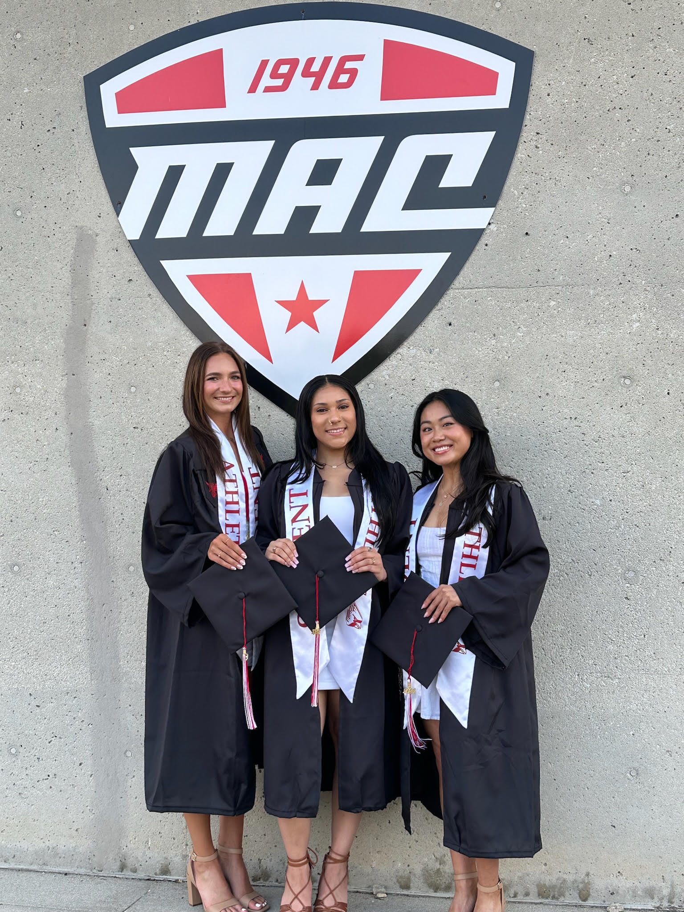
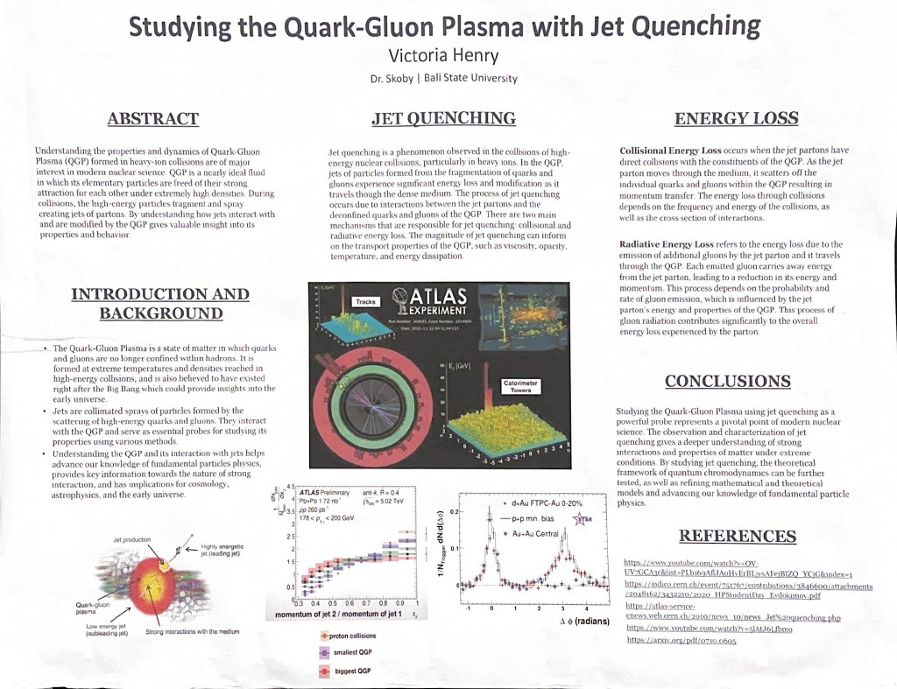

| Skills | |
|---|---|
| Technical | Transferable |
| Python | Problem Solving |
| Java | Team Leadership |
| C++ | Analytical Thinking |
| Technical Writing | Communication |
| Microsoft Office | |
Bachelor's of Engineering in Computer Science
North Carolina A&T State University | 2025 - 2027
Bachelor's of Science in Physics
Ball State University | 2020 - 2024
• 2022-2024 Dean's Honor List
• Senior Research Project: Studying Quark-Gluon Plasma with Jet Quenching
• Black Student Association Member
• Full Ride Athletic Scholarship Recipient
• Presidential Academic Award 2020

